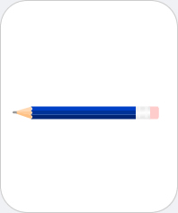

|  |
Pencil
Chemicals you may find: Graphite Clay Pigments Wax |
| Pencils (also called lead pencils, although no lead is present) are tools to write or draw often consisting of wood tube in which a graphite stick is inserted. Pencils are in use since the early 16th century, when high quality graphite was cut and wrapped for use. Today pencils are made from ground graphite that is mixed with clay in water and strings are formed, which then fired in a kiln to remove the water. They are then dipped into wax or oil, which permeates the clay/graphite mixture and makes writing smoother. Pencils are classified according to hardness (H) and blackness (B). Color pencils contain in addition pigments. | |